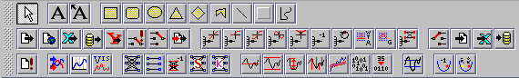

Toolbar items are mostly used to place components to be placed on the development pane.
To do this, first click on the desired toolbar item. Then click on the development pane, and the component will be placed there. Once a component has been placed on the development pane, the toolbar reverts to the default of having the selection tool (the arrow symbol) selected.
The tool bar buttons are divided into three palettes. The first one
contains all
the drawing buttons, while the others contain all the neural network
construction
components, as shown in the following figure:

The content of the drawing palette is determined by the Joone
application while the component panels are configurable by modifying
the
layers.xml file. Please note that not all of the following components
may appear by default in the Joone Editor application, depending that
on the content of the layers.xml file.
By changing that file, anyone can add/remove components from the
toolbars.
Read the the section about the XML parameter file for details on
how to alter the items that appear in the toolbar.